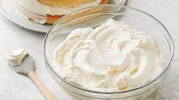

Homemade Buttercream Frosting

Easy-to-Make Frosting to Add a Homemade Touch to Any Dessert!
Perfect for Decorating Cookies!
Ingredients
- 1/2 cup unsalted butter, room temperature
- 2 cups confectioners' sugar
- 1 1/2 teaspoons pure vanilla extract
- 2 tablespoons milk
- food coloring (optional)
Steps
- Cream butter in the bowl using a stand mixer until smooth and fluffy.
- Gradually beat in confectioners' sugar until fully incorporated.
- Add milk and vanilla extract and beat on high for 3 to 4 mins until smooth and fluffy.
- Mix in food coloring if desired.